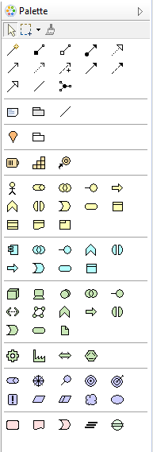
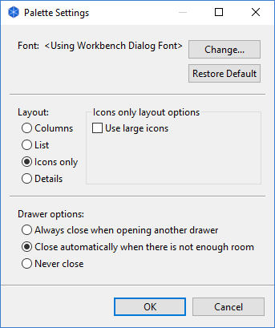
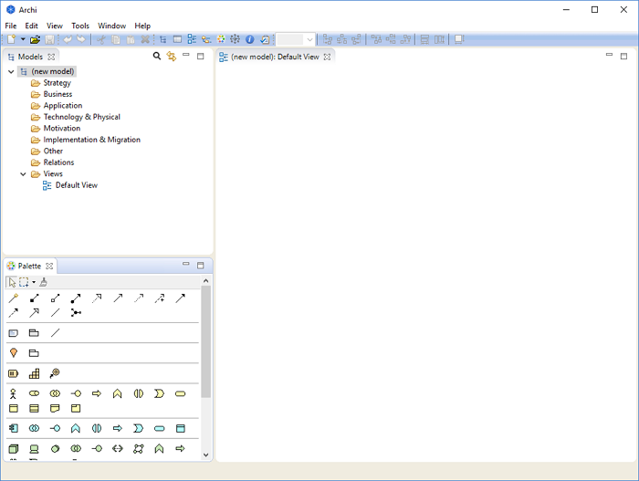

Can't see the palette? Don't panic!
Can't see the palette? Don't panic!If you can't see the palette in a View it may be closed. If this is the case, open it by clicking the "Show Palette" triangle button at the top-right of the View window.
The palette contains the drawing tools, and elements and relationships that can be added to a View. It is an area that is attached to a View.
The Palette in a View
To create new elements and relationships in a View select the required object tool on the palette and either click or drag it onto the canvas area. Once the figure has been added to the canvas you can resize and re-position it by the usual drag actions.
You can configure how the Palette displays items by right-clicking on the Palette and choosing "Settings..." (Note - The "Use large icons" option is not implemented in Archi's palette).
Palette Settings
Can't see the palette? Don't panic!
If you can't see the palette in a View it may be closed. If this is the case, open it by clicking the "Show Palette" triangle button at the top-right of the View window.
If you have created Specialized Concepts these will be present in the Palette to enable you to quickly add specialized concepts to a View like any other concept. This can be enabled or disabled in Preferences

Specialized Concepts in the Palette
By default, each View has its own attached Palette. It is also possible to have a single, detachable Palette that you can drag and dock to any position in the application window. To do this, click on the "Palette" button on the main toolbar:
The "Palette" button on the main toolbar
Pressing this button detaches the Palette from the View and creates a Palette window. You can drag and dock this to anywhere in the application space. The following example has the Palette docked in the lower left corner:
The Palette window docked in the lower left corner
Closing the Palette window re-attaches it to any open Views.